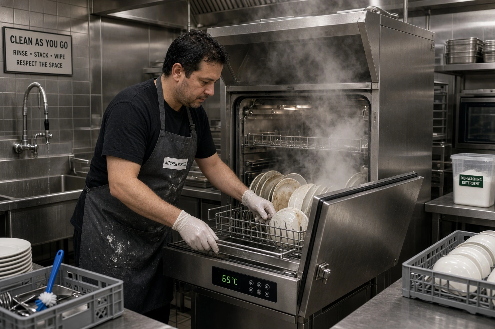
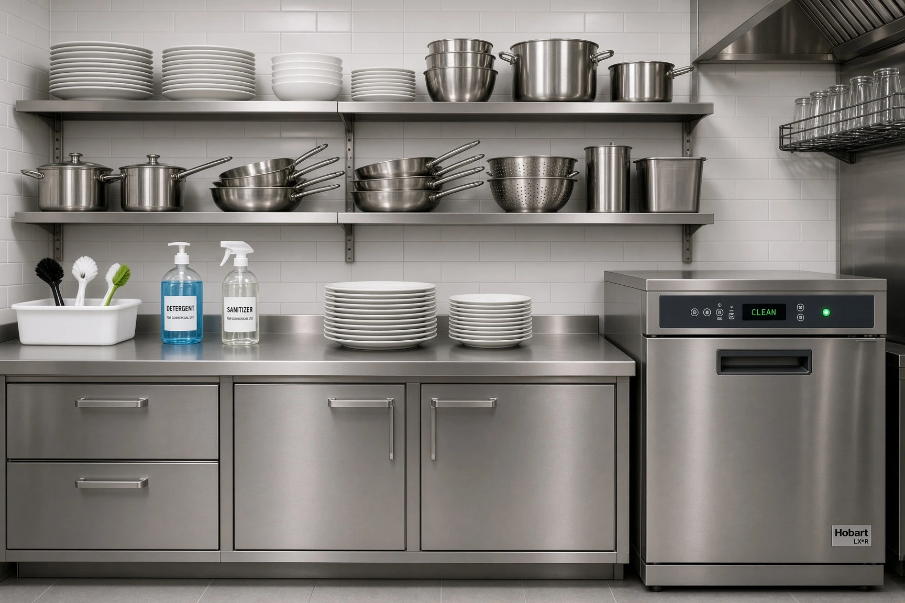

Salaire d'un plongeur en restauration en 2026 : brut, net et grille HCR
Le plongeur assure le lavage de la vaisselle, des ustensiles et du matériel de cuisine, et souvent l'entretien des locaux. Poste indispensable au bon déroulement du service, il est classé en bas de la grille HCR : son minimum est de 2 102 € brut par mois en 39h depuis le 1er novembre 2026, soit le niveau du SMIC. Voici le détail par échelon, le net, les règles du travail de nuit et les perspectives d'évolution.

Combien gagne un plongeur en 2026 ?
Le plongeur est classé au niveau I de la grille HCR, et peut monter jusqu'au II/1 (parfois II/2) avec de l'expérience, une qualification ou des responsabilités supplémentaires, comme le poste de chef de plonge.
| Niveau / échelon | Taux horaire brut | Brut mensuel 35h | Brut mensuel 39h | Net estimé 39h |
|---|---|---|---|---|
| I/1 | 12,31 € | 1 867 € | 2 102 € | ≈ 1 618 € |
| I/2 | 12,37 € | 1 876 € | 2 112 € | ≈ 1 626 € |
| I/3 | 12,47 € | 1 891 € | 2 129 € | ≈ 1 639 € |
| II/1 | 12,58 € | 1 908 € | 2 148 € | ≈ 1 654 € |
Minima conventionnels de l'avenant n°36 à la convention collective HCR (IDCC 1979), applicable depuis le 1er novembre 2026. Base 35h = 151,67 h × taux ; base 39h = 151,67 h × taux + 17,33 h × taux × 1,10 (heures 36 à 39 majorées de 10 %). Net estimé = brut × 0,77, à titre indicatif. Hors avantage en nature repas, primes et heures au-delà de 39h.
Avec la nouvelle grille, le premier échelon (I/1) est égal au SMIC (12,31 €/h) : un plongeur débutant ne peut pas être payé en dessous. Les échelons suivants sont désormais légèrement au-dessus.
Classification et qualification du plongeur
Les éditeurs de paie spécialisés situent le plongeur entre I/1 et II/1, selon son expérience et ses fonctions. Plusieurs éléments peuvent justifier un échelon supérieur :
- l'entretien du matériel de cuisine et de la batterie, en plus de la vaisselle ;
- l'aide à la préparation (épluchage, découpe simple) — on parle alors de plongeur-officier de cuisine ;
- l'organisation de la plonge et l'encadrement d'autres plongeurs (chef de plonge) ;
- une qualification, comme le CQP plongeur-officier de cuisine de la branche.

Travail de nuit : ce que prévoit la convention HCR
Le plongeur termine souvent tard, après le dernier service. En HCR, le travail de nuit correspond à la période de 22 heures à 7 heures. Un salarié devient « travailleur de nuit » s'il accomplit au moins 3 heures de nuit au moins deux fois par semaine, ou au moins 280 heures de nuit sur 12 mois.
- La convention HCR prévoit une contrepartie obligatoire sous forme de repos compensateur, calculé sur les heures de nuit effectuées.
- Elle n'impose pas de majoration de salaire pour le travail de nuit, mais l'employeur peut en prévoir une.
- Le travailleur de nuit bénéficie d'un suivi médical renforcé.
Détail des règles dans notre guide de la convention collective HCR.
Le salaire réel d'un plongeur
Sur le marché, le salaire d'un plongeur reste le plus souvent proche du minimum conventionnel. Les différences se font surtout sur le volume d'heures, les heures de nuit, le statut de chef de plonge et la région. Dans les établissements à fort volume (brasseries, hôtels, restauration de groupe), la tension sur ces postes pousse parfois les employeurs à proposer un échelon supérieur dès l'embauche.
Ce qui s'ajoute au salaire de base
- Heures supplémentaires : en HCR, les heures de la 36e à la 39e sont majorées de 10 %, de la 40e à la 43e de 20 %, et au-delà de 50 %.
- Avantage en nature repas : chaque repas pris sur place est évalué à 4,35 € (minimum garanti). Il s'ajoute au salaire et ne peut pas servir à atteindre le minimum conventionnel. Détail dans notre guide de l'avantage en nature repas.
- Travail de nuit, dimanches et jours fériés : contreparties prévues par la convention, voir la convention collective HCR.
Notre modèle de planning gratuit, compatible convention HCR, vous aide à maîtriser les heures et la masse salariale de votre brigade.
Accéder au planning →Missions d'un plongeur en restauration
Le plongeur garantit que la cuisine et la salle ne manquent jamais de vaisselle propre, et que le matériel est nettoyé selon les règles d'hygiène. Ses missions dépassent souvent la seule vaisselle :
- La plonge vaisselle : débarrassage, prélavage, lave-vaisselle, rangement de la vaisselle propre.
- La plonge batterie : casseroles, plaques, bacs gastronormes et ustensiles de cuisine.
- Le nettoyage : sols de cuisine, poubelles, local plonge, selon le plan de nettoyage du PMS.
- L'aide en cuisine : épluchage, rangement des livraisons, dans de nombreux établissements.
Ces tâches « en plus » ne sont pas anodines pour le salaire : elles peuvent justifier un échelon supérieur, voire un classement de plongeur-officier de cuisine.
Exemple de bulletin de paie d'un plongeur
Pour passer de la grille au bulletin de paie, prenons un plongeur débutant, classé en I/1, à 39 heures par semaine, qui prend ses deux repas sur place 22 jours dans le mois (44 repas) :
| Ligne du bulletin | Calcul | Montant |
|---|---|---|
| Salaire de base | 151,67 h × 12,31 € | 1 867,06 € |
| Heures supplémentaires 36e–39e (+10 %) | 17,33 h × 12,31 € × 1,10 | 234,67 € |
| Avantage en nature repas | 44 repas × 4,35 € | 191,40 € |
| Salaire brut | 2 293,12 € | |
| Cotisations salariales (estimation) | ≈ 23 % du brut | − 527,42 € |
| Déduction de l'avantage en nature | repas déjà pris sur place | − 191,40 € |
| Net à payer estimé | avant prélèvement à la source | ≈ 1 574 € |
Exemple simplifié, au minimum conventionnel de l'avenant n°36. Le taux de cotisations salariales (≈ 23 %) est une estimation : il varie selon la mutuelle, la prévoyance et la situation du salarié. Hors primes, heures au-delà de 39h et heures de nuit.
L'avantage en nature repas fait un « aller-retour » sur le bulletin : il est ajouté au brut pour être soumis aux cotisations, puis déduit du net puisque le repas a été consommé. C'est pourquoi le net à payer est légèrement inférieur à l'estimation « brut × 0,77 » de la grille. Si l'employeur ne fournit pas le repas alors qu'il le devrait, il verse à la place une indemnité compensatrice, qui s'ajoute au net : voir notre guide de l'avantage en nature repas.
Le plongeur dans l'équipe : comparatif des salaires
Le plongeur débutant est au premier échelon de la grille, égal au SMIC depuis le 1er novembre 2026. Le premier palier d'évolution, vers le poste de commis titulaire d'un CAP, représente une hausse modeste du minimum, mais ouvre toute la progression de la cuisine :
| Poste | Classement HCR habituel | Brut 39h minimum |
|---|---|---|
| Plongeur | I/1 à II/1 | 2 102 € à 2 148 € |
| Commis de cuisine | I/1 à II/3 | 2 102 € à 2 293 € |
| Serveur | I/1 à III/3 | 2 102 € à 2 438 € |
| Chef de partie | III/1 à IV/2 | 2 320 € à 2 573 € |
| Second de cuisine | III/3 à IV/3 | 2 438 € à 2 682 € |
| Chef de cuisine | IV/1 à V/3 | 2 508 € à 4 897 € |
Minima de l'avenant n°36 à la convention collective HCR, applicable au 1er novembre 2026. Classements indicatifs repris des éditeurs de paie spécialisés : le classement dépend toujours des fonctions réellement exercées. Grille complète dans notre grille des salaires HCR.
Conditions de travail et prévention des risques
La plonge est l'un des postes les plus exposés de la restauration : station debout prolongée, charges lourdes, chaleur et humidité, sols glissants, produits de nettoyage. L'employeur doit évaluer ces risques et les consigner dans le document unique d'évaluation des risques professionnels (DUERP), obligatoire dès le premier salarié.
- Glissades : chaussures de sécurité antidérapantes, sols adaptés, évacuation de l'eau.
- Produits chimiques : gants, fiches de données de sécurité accessibles, dosage automatique des produits de lavage.
- Gestes répétitifs et charges : hauteur de travail adaptée, chariots pour les bacs, rotation des tâches.
- Brûlures : vapeur du lave-vaisselle et eau très chaude, à intégrer dans la formation au poste.
De bonnes conditions de travail sont aussi le meilleur argument de recrutement sur un poste où le salaire reste proche du minimum : un local plonge bien équipé et un planning qui évite les fins de service à rallonge comptent pour fidéliser.
Recruter un plongeur : les points d'attention
- Le classement réel : un plongeur qui aide en cuisine ou encadre d'autres plongeurs ne doit pas rester au I/1.
- Les heures de nuit : si le plongeur termine régulièrement après 22 heures, vérifiez s'il devient travailleur de nuit au sens de la convention, avec repos compensateur et suivi médical renforcé.
- Les candidats étrangers : vérifiez l'autorisation de travail avant l'embauche ; l'employeur est responsable de ce contrôle.
- La période d'essai : sa durée dépend de la catégorie du salarié (employé) ; le Code du travail fixe des maximums (article L1221-19) et la convention HCR ses propres règles. Elle doit figurer dans le contrat. Détail dans notre guide de la convention collective HCR.
- Les formalités : déclaration préalable à l'embauche (DPAE) auprès de l'Urssaf avant la prise de poste, contrat écrit (obligatoire pour un CDD ou un temps partiel), inscription au registre unique du personnel.
Évolution : de plongeur à commis de cuisine
La plonge est une porte d'entrée fréquente dans la restauration. Avec de l'expérience, une formation (CQP, CAP cuisine en apprentissage ou par la VAE) et la confiance du chef, un plongeur peut devenir commis de cuisine : le minimum passe alors à 2 148 € brut en 39h pour un commis classé II/1.
Voir le salaire d’un commis de cuisine et la progression complète dans notre grille des salaires.
Questions fréquentes : salaire plongeur
Quel est le salaire d'un plongeur en restauration ?
Depuis le 1er novembre 2026 (avenant n°36), un plongeur débutant classé I/1 touche au minimum 12,31 €/h, soit 2 102 € brut par mois en 39h et environ 1 618 € net. Avec de l'expérience, il peut monter jusqu'au II/1, soit 2 148 € brut.
Un plongeur est-il payé au SMIC ?
Le premier échelon de la grille HCR (I/1) est égal au SMIC, soit 12,31 €/h. Un plongeur débutant est donc payé au minimum au SMIC ; les échelons I/2 à II/1 sont légèrement au-dessus depuis la nouvelle grille du 1er novembre 2026.
Le travail de nuit du plongeur est-il majoré ?
La convention HCR ne prévoit pas de majoration de salaire obligatoire pour le travail de nuit (22h-7h), mais une contrepartie sous forme de repos compensateur pour les heures de nuit. L'employeur peut prévoir une majoration plus favorable.
Qu'est-ce qu'un plongeur-officier de cuisine ?
C'est un plongeur qui assure aussi l'entretien du matériel de cuisine et participe à des tâches de préparation simples. La branche a créé un CQP plongeur-officier de cuisine pour reconnaître cette qualification.
Un plongeur peut-il devenir cuisinier ?
Oui, c'est un parcours fréquent. Avec de l'expérience, une formation (CQP, CAP cuisine en apprentissage ou VAE) et l'appui du chef, le plongeur peut évoluer vers le poste de commis de cuisine, mieux rémunéré.
Quel est le salaire net d'un plongeur en 2026 ?
Un plongeur débutant (I/1) à 39h touche au minimum 2 102 € brut par mois, soit environ 1 618 € net. Avec l'avantage en nature repas (44 repas par mois), le net à payer est d'environ 1 575 €, avant prélèvement à la source. À 35h, le minimum est de 1 867 € brut.
Un plongeur peut-il être payé moins que le SMIC ?
Non. Aucun salarié ne peut être payé en dessous du SMIC, et le premier échelon de la grille HCR (I/1) est égal au SMIC depuis le 1er novembre 2026, soit 12,31 € brut de l'heure. L'avantage en nature repas ne peut pas servir à atteindre ce minimum.